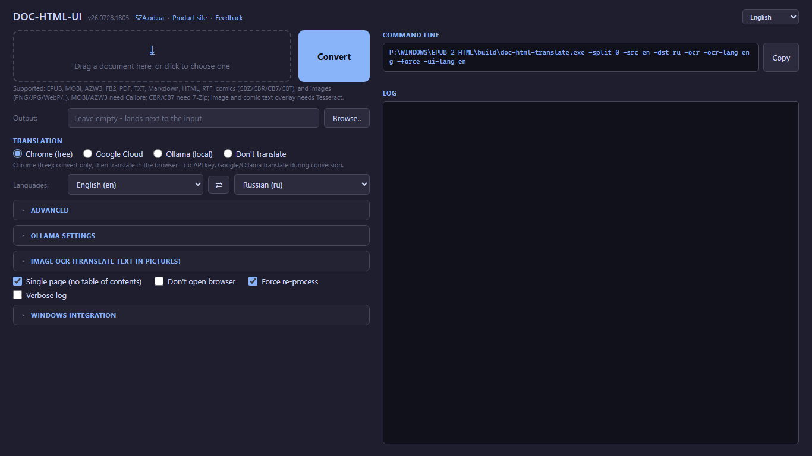
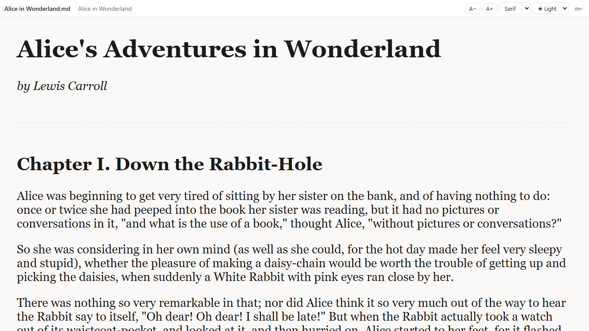

Fast local book reading with free Chrome translation
Convert EPUB/PDF and other formats into local HTML pages, then read in Chrome and translate to your language using built-in browser translation. No API key, no subscription, no ceremony required.
Doc-HTML-Translate comes in several forms; they share the same converter and the same "hand the browser clean HTML, let it translate" idea. Pick whichever fits.
CLI - doc-html-translate.exe, the command-line converter and Windows file-association handler. This page documents its flags.
GUI desktop app - doc-html-ui.exe, a windowed front-end that exposes every flag below, with a file picker, drag & drop and a default-handler toggle (opt-in, off by default).
Microsoft Store app - the same desktop app (GUI + CLI) shipped as an auto-updating, Store-signed MSIX: Microsoft Store.
Browser extension - re-renders documents (PDF, EPUB, MOBI, AZW3, FB2, RTF, TXT, Markdown, HTML, CBZ/CBT comics) as clean HTML right in the browser so the built-in Translate page works on them, no app install needed: Chrome Web Store · extension page.
Recommended Workflow (Free)
The most convenient everyday scenario, and yes, "free" really does mean free:
Open the file with the app or run the plain command
Open generated index in Chrome
Use Chrome page translation to your target language

Step 1 - drop the file on the app window and press Convert.

Step 2 - the converted book opens in the browser. Step 3 happens in the browser's own menu: Translate page.
doc-html-translate.exe "book.epub"
# or doc-html-translate.exe "book.pdf"
Why: no API key setup, no paid translation calls, very fast startup.
Quick Start
Build
go build -o build/doc-html-translate.exe ./cmd/doc-html-translate
Also comic archives (CBZ / CBR / CB7 / CBT): a container of page images with no text layer, opened page by page with OCR forced on, so the speech-bubble text is recognized and laid over each page as translatable plates. CBZ and CBT need nothing extra; CBR and CB7 require 7-Zip installed (the same external-tool pattern as MOBI needing Calibre).
Also a standalone image (PNG, JPG, JPEG, WebP, GIF, BMP, TIFF): the app OCRs it and lays translatable text plates over the picture, so Chrome/Edge page translation works on it in place - the same overlay the browser extension produces. Needs the Tesseract OCR engine (see -ocr-lang).
MOBI and AZW3: requires Calibre installed. CBR and CB7 comics: require 7-Zip installed (CBZ and CBT need nothing extra). DRM-protected files are not supported - the converter respects locks it cannot pick.
Plain-text (.txt) input is decoded by sniffing its bytes - a UTF-8/UTF-16 byte-order mark, then valid UTF-8, then a legacy Cyrillic code page (Windows-1251, KOI8-R, CP866) by detection - so a DOS-era or Notepad "Unicode" .txt reads as text, not mojibake. An unreadable binary (a .docx, .djvu, or a comic archive with no 7-Zip) is refused with a named format instead of being turned into a garbage document.
02Reading Experience
The generated HTML carries a small, fully client-side reader layer - no server to babysit, works happily on file://:
Reading themes - a toggle in the navbar (and on index.html) cycles Light / Sepia / Dark / Night. Your choice is stored in localStorage and applied on every page.
Reading position - your scroll is saved per book, so the app remembers where you stopped even when you don't. index.html shows a "Continue reading" link to the last page you were on, and the navbar carries a thin progress bar across the whole book.
Spending guard - for paid engines, -max-cost N turns the cost estimate (chars / 1e6 * $20) into a hard pre-flight limit: if the estimate exceeds N, translation is skipped and the book is still produced untranslated.
Single-page documents have no navbar and therefore no reader layer.
03Optional External Tools
The app works out of the box for EPUB, TXT, FB2, RTF, HTML, Markdown. The tools below are strictly optional - install them only if you want full PDF image support and the extra formats.
Tool
Purpose
Needed for
How to install
pdftotext (Xpdf / Poppler)
High-quality PDF text extraction - handles complex fonts, ligatures, multi-column layout better than the built-in library
PDF files - optional, built-in fallback used when absent
Without pdftotext: built-in Go PDF reader is used (slightly lower quality). Without ffmpeg: JPEG2000 images in PDFs will not be visible in the browser. Without Calibre: MOBI/AZW3 files cannot be opened. Without 7-Zip: CBR/CB7 comics cannot be opened.
04Main Flags
All optional. The defaults are sensible, so you can ignore this whole table until you have an opinion.
Flag
Default
Description
-notranslate
false
Convert only, skip translation
-noopen
false
Do not auto-open browser
-google
false
Google Cloud Translation API
-ollama
false
Local Ollama translation
-ocr
false
OCR text inside document images and overlay it as translatable HTML (needs Tesseract)
-ocr-lang
(-src)
OCR language(s), e.g. eng or eng+rus. Left empty it defaults from -src (else eng), and the app then checks the writing system on the page: where the data for it is installed the language is added rather than replaced (rus+eng), and where it is not the page gets no text plates and a line naming the pack to install. Pass this flag and that check never runs
-ocr-langs
false
List installed/available OCR languages and exit
-ocr-download
empty
Download an OCR language pack (e.g. -ocr-download rus) and exit
-max-cost
0
Abort paid translation before sending if the estimated cost in USD exceeds N. When in doubt, 0 (no limit) is a perfectly respectable choice
-split
5000
Split pages at N chars, 0 disables split
-toc-depth
0
Table-of-contents nesting depth on index.html, 0 = unlimited, 1 = chapters only
-folder
empty
Custom output parent folder
-src
en
Source language
-dst
ru
Target language
-ui-lang
(system)
Interface language: en ru uk de it es fr pt ar hi bn ur zh. Empty follows the Windows language
-force
false
Rebuild even if output exists
-register
false
Opt in to becoming the default handler for EPUB, PDF and other supported files (off by default; also the default-handler toggle in the doc-html-ui app). The first run asks, and writes nothing without a yes.
-unregister
false
Release the default-handler association (keeps the "Convert to HTML" right-click entry and "Open with").
-register-openwith
false
Add the app to the Windows "Open with" list and the "Convert to HTML" right-click menu, without making it the default handler. The doc-html-ui app offers the same as a toggle under "Windows integration" and on its first-run question; it never adds it on its own.
-report
false
Pack the recent run logs plus an environment summary into an archive for the author, print where it landed, and exit
Every option above is also available in the doc-html-ui graphical app - file picker, drag & drop, TOC depth, spending guard and a default-handler toggle (opt-in, off by default; the app always adds the "Convert to HTML" right-click entry). On the Microsoft Store build the GUI is the launchable entry point, while double-clicking a file still runs the command-line converter.
05Sending logs to the author
When a conversion goes wrong, a description from memory is rarely enough to reproduce it. The app keeps its
recent run logs on disk - up to 20 runs or 20 MB, oldest trimmed first - so a failure can still be reported an
hour later, or after a crash.
Open About the program at the bottom of the settings in the doc-html-ui app.
It states the version, the edition (portable or Microsoft Store) and whether the converter engine was found, and
it carries one button: Send logs to the author. One press builds a single archive, opens its
folder with the file selected, copies its path to the clipboard, and opens a pre-addressed message in your own
mail program. On the command line, -report builds the same archive and prints where it landed.
The archive is written to %LOCALAPPDATA%\doc-html-translate\reports\ and contains exactly three
things:
environment.txt - version, edition, platform, interface language, whether Tesseract was
found and which OCR languages are installed, and the default Ollama model. Always English, so the author reads
one format.
settings.json - the settings that shaped the last run.
logs/ - the recent run logs, newest first.
Everything in it is redacted first: anything shaped like a key, token, password or Google API key becomes
<redacted>, and your own folders collapse to %USERPROFILE% and
%LOCALAPPDATA%. Document file names are kept on purpose - a log that cannot be
matched to a document usually cannot be acted on. Your Google API key is never in the archive; an automated test
fails the build if it could be. The archive is capped at 15 MB, dropping the oldest logs first and telling you
how many were left out.
Nothing is ever sent automatically. The app opens no network connection for this; it hands you
a file and an unsent message, you attach the archive and press Send. Use Open the archive in the
same section to look inside first, and Clear stored logs if you would rather keep no run history
on disk at all.
The browser extension has no log store to archive, so it offers the equivalent it can honestly
give: a Copy diagnostics button in the About block of its options page. It copies a short
English summary - extension version, browser, interface language, your option set, and the format, page count and
last error of the most recent document - to the clipboard, ready to paste into a mail. It carries no document
text and no list of your sites.
Turn a document (EPUB, PDF, FB2, a comic archive, an image, ..) into a folder of local HTML pages with an index.html, navigation and a table of contents. The app's main job; nothing is uploaded.
Translate (page translation)
The free way to read in your language: open the converted index.html in Chrome or Edge and use the browser's own Translate page. Google Cloud and Ollama are optional engines that translate during conversion instead.
OCR overlay
Text that Tesseract recognized in a picture - a scan, a comic page, a standalone image - laid over it as translatable text plates, so page translation works on the picture in place.
Text plate
One block of the OCR overlay. It covers the letters it replaces; a button in the header hides every plate to show the picture underneath.
Desktop app
The Windows edition: doc-html-ui.exe (the window) and doc-html-translate.exe (the command line), portable or from the Microsoft Store.
CLI
The command-line converter doc-html-translate.exe. Every option is a flag listed under Main Flags.
Browser extension
The Chromium edition from the Chrome Web Store and Edge Add-ons: it converts a document right in a browser tab, without the desktop app.
Microsoft Store app
The desktop app as a Store-signed, auto-updating MSIX package.
Default handler
The program Windows starts when you double-click a file. The app becomes one for EPUB, PDF and the other supported files only when you opt in.
Table of contents (TOC)
The multi-level list of chapters on index.html, built from the book's own structure.
Spending guard
A cost limit for the paid translation engines: above it, translation is skipped and the book is still produced.
Tesseract
The open-source OCR engine the app calls for text in pictures; the OCR overlay needs it.
The interface of the application and the extension is available in 13 languages: en ru uk de it es fr pt ar hi bn ur zh. English, Russian and Ukrainian are author-proofread; the other ten are machine-translated and unproofread - corrections are welcome at sza@ukr.net.
Related tool
For individual images, scans, and media that you need to view or sort, use Fast Media Sorter for Windows. It complements this tool rather than replacing it.